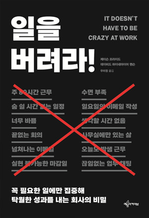

12
그런데 더 심각한 문제는, 많은 이들이 긴 업무 시간과 극도의 분주함, 부족한 잠을 명예로운 훈장처럼 여긴다는 것이다. 만성 피로 상태는 자랑스러운 훈장이 아니다. 어리석음의 표시일 뿐이다.
13
일주일에 60, 70, 80시간을 일하지만 그 가운데 일 자체에 사용한 시간은 얼마나 되는가? 회의에 쓴 시간, 집중을 방해하는 것들 때문에 낭비된 시간, 비효율적인 비즈니스 관습 때문에 사라져버린 시간은 얼마나 되는가? 엄청나다.
해결책은 더 오래 일하는 것이 아니라 쓸데없이 일에 쓰는 시간을 줄이는 것이다. 더 생산해야 하는 게 아니라 불필요한 것들을 덜 만들어야 한다. 집중을 방해하는 요인을 대폭 줄이고, 덜 걱정하며 스트레스를 줄여야 한다.
32
또한 미친 듯이 일하라는 말은 나쁜 충고이기도 하다. 중요한 통찰이나 획기적인 아이디어는 하루 14시간 동안 일한다고 얻을 수 있는 것이 아니다. 창의력, 발전, 영향력은 폭력적인 장시간 노동에서 나오지 않는다.
37
궁극적으로 원하는 것이 무엇인지 한번 생각해보라. 경쟁자의 얼굴에 모래를 끼얹는 가상의 경쟁에서 이기는 것인가? 아니면 경쟁자는 그냥 잊고 당신이 만들 수 있는 최고의 제품을 만드는 것인가?
50
단기 계획은 좋은 평가를 받지 못한다. 이것은 옳지 않다. 우리는 매6주마다 그다음에 할 업무를 결정한다. 그것이 우리가 세우는 유일한 계획이다. 이후의 일은 나중에 생각한다.
그리고 장기 계획을 세우면 안전에 대해 잘못된 생각을 갖게 된다. 5년 후나 3년 후 또는 1년 후의 세상이 어떻게 변해 있을지 모른다는 것을 빨리 인정하면 할수록, 당신은 잘못된 결정을 내릴지도 모른다는 두려움을 내려놓고 더 빨리 전진할 수 있다. 먼 미래를 예측하지 않을 때 흐릿하게 보이는 것들을 없앨 수 있다.
65
이를테면 베이스캠프에서는 업무 진척 상황에 대한 회의를 하지 않는다. 한 사람이 자신이 하는 일과 계획에 대해 잠깐 발표하고, 또 다음 사람이 발표하는 이런 회의가 어떤 것인지 모두 잘 알 것이다. 이것은 시간 낭비일 뿐이다. 왜냐고? 모든 직원이 한자리에 모여서 회의하는 것이 효율적인 것처럼 보이지만 그렇지 않다. 이런 회의에는 큰 비용이 든다. 8명이 1시간 동안 회의실에 모여 있다면, 거기에 소요되는 시간은 1시간이 아니라 8시간이다.
73
베이스캠프에서는 바쁜 것을 중요하게 생각하지 않는다. 우리는 효과적인 것을 중요하게 생각한다. 우리가 얼마나 더 적게 일할 수 있을까? 얼마나 많은 일을 잘라낼 수 있을까? 사람들은 할 일을 더하는 대신 안 해도 될 일을 더해간다.
106
회사의 경영진이 우리는 정말 소중한 가족 같은 회사라고 말할 때는 조심하라. 그들의 의미하는 바는 건강한 가족들이 하듯이, 무슨 일이 있어도 회사가 당신을 보호해주고 조건 없이 당신을 사랑해준다는 뜻이 아니다. 당신의 일방적인 희생을 원할 때 그런 말을 한다.
107
최고의 회사는 가족 같은 회사가 아니다. 최고의 회사는 당신의 진짜 가족을 지원한다. 가족의 협력자다. 그런 회사는 직원이 합리적인 시간에 컴퓨터를 끄고 최고의 남편, 최고의 아내, 최고의 부모, 최고의 형제자매, 최고의 자녀가 될 수 있도록 건강하고 성취감을 느낄 수 있는 근무 환경을 제공한다.
115
상사가 직원에게 "어려움이 있으면 언제든지 이야기하게"라고 말하는 것은, 직원이 정말 그렇게 할 수 있도록 해주는 게 아니라 상사 자신이 할 일을 회피하는 것이다. 기탄없이 말해야 하는 책임을 전적으로 직원에게 돌리는 것일 뿐이다.
116
직원들은 보통 말하지 않는다. 그리고 말해야 할 의무도 없다.
147
우리도 처음엔 그랬다. 연봉 협상은 사업을 하고 있는 한 꼭 해야 하는 불변의 법칙처럼 보인다. 하지만 그렇지 않다. 몇 년 전에 우리는 다른 길을 택했다. 매년 스트레스로 가득했던 재계약을 위한 연봉 협상 의식을 완전히 없애기로 결정했다. 이제 베이스캠프에서는 연봉 협상을 하지 않는다. 같은 직급에서 같은 업무를 담당하는 사람은 동일한 연봉을 받는다. 같은 일에 대해 같은 보수를 지급하는 것이다.
148
급여는 매년 업계의 수준을 확인하고 자동으로 인상을 결정한다. 우리의 목표는 업무 분야에 상관없이 직원들에게 업계 상위 10%에 해당하는 급여를 주는 것이다. 그렇기 때문에 고객서비스직이든 교환원이든 프로그래머든 디자이너든 관계없이 업계에서 그 직종의 상위 10%에 해당하는 급여를 받는다.
151
최근에 우리는 이익과 성장에 따른 새로운 분배 제도를 시행하기로 했다. 해마다 총이익이 증가한다면 그해에 발생한 이익의 증가분에 대해 25%를 직원들에게 분배할 것이다. 이것은 업무 분야와 관계없으며 개인의 실적과도 관계없다. 판매원이 없기 때문에 커미션도 아니다. 이익 증가가 발생하면 모든 직원에게 분배하고, 그렇지 않으면 아무도 가져가는 사람이 없다.
214
6주간 프로젝트를 진행할 때, 4주째는 작업을 거의 완성하고 일을 마쳐가는 시간이어야 한다. 새롭게 떠오른 엄청난 아이디어를 적용할 시간이 아니다.
너무 늦게 떠오른 새 아이디어는 다음 차례를 기다려야 한다!
218
모든 상황에 대해 어디까지가 충분한지 또는 어느 정도가 충분한지에 대한 확실한 정의는 없다. 반면에 한 가지 확실한 것은 있다. 바로 충분하다고 생각하지 않으면 항상 미친 듯이 일하게 된다는 것이다.
233
경영학자 피터 드러커는 이미 수십 년 전에 분명히 말했다. "애초에 할 필요가 없는 일을 효율적으로 하는 것보다 쓸데없는 짓은 없다."
253
모험은 꼭 무모할 필요가 없다. 당신과 당신의 사업을 불필요한 위험에 처하게 한다고 해서 당신이 더 대담하거나 용기 있는 사람이 되는 것은 아니다. 영리한 모험이란, 생각대로 일이 진행되지 않으면 다른 시도를 해볼 수 있는 여력이 있는 상황에서 하는 것이다.
255
베이스캠프에서는 업무 외적으로도 계절의 변화를 즐긴다. 회사가 모든 직원을 위해 지역 공동체가 후원하는 지역 농장의 수확물을 공급받을 수 있는 지분을 대신 구매해준다. 이렇게 함으로써 지역에서 수확된 신선한 계절 채소와 과일이 직원들의 집으로 배달된다. 이것은 1년 내내 회사가 제공하는 혜택이며 수확물의 풍성함은 계절에 따라 달라진다. 변화를 즐기면서 맛있게 먹고 건강해지는 방법이다.
295
그래서 우리는 가능한 한 오랫동안 작은 회사로 머물기로 결정했다. 새로운 제품을 계속 만들어내기보다 더 책임 있게 의무를 다하며 성장하고 계속적으로 짐을 가볍게 해서 줄여나가는 것을 목표로 삼았다. 심지어 경기가 호황일 때도 말이다. 호황일 때도 규모를 줄이는 것은 조용하게 일하고, 이익을 내며, 독립적인 회사만이 누릴 수 있는 사치다.